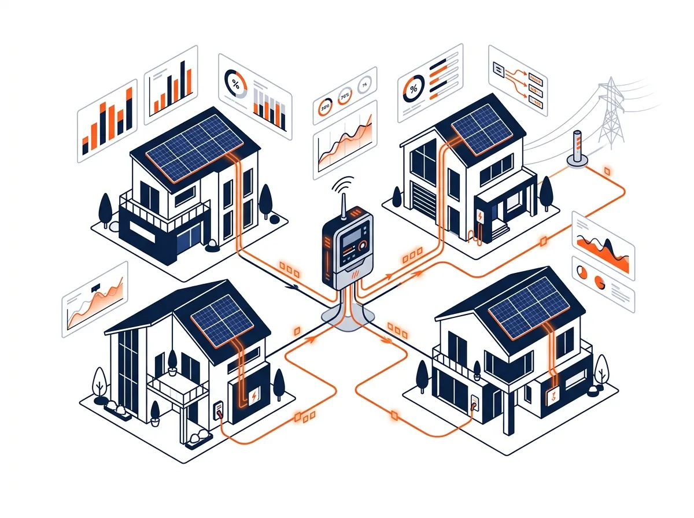

Many older people prefer to live independently at home, but their children and relatives worry about unexpected events such as a fall, sudden illness or forgetting medication. Common solutions like CCTV cameras feel like a constant invasion of privacy, and wearables (such as alert bracelets) are often forgotten or resisted.
KAP's solution uses no cameras at all; an older person's condition is detected solely by monitoring and analysing the home's electricity-use data.
How can electricity flow speak for an older person's wellbeing?
Everyday behaviour leaves a precise trace in a home's electricity use. An older person who wakes up in the morning usually:
- switches on the electric kettle or tea maker (a distinct few-minute spike),
- opens the fridge or turns on the microwave,
- turns on the TV or radio,
- switches on the bedroom or bathroom light.
This sequence forms a regular daily 'behavioural signature'. Once AI learns it, any suspicious deviation reveals that something may be wrong.
'When the kettle that comes on every day at 7:30 is still silent at 10 a.m., you don't need a camera — the electricity itself is a quiet alert that something has happened.'
Load disaggregation (NILM) in the KAP platform
Using NILM (Non-Intrusive Load Monitoring) technology, the KAP platform separates the current of different appliances simply by monitoring the main panel with the ESA — no need for dozens of sensors around the house. KAP's reinforcement-learning system learns the person's sleep, meal and rest patterns within 7 to 14 days.
Smart alert scenarios
- Break from the morning routine: no electrical activity for 1.5 hours after the usual wake-up time.
- Bathroom light left on: the bathroom light or fan staying on for more than 45 minutes at midnight, which may signal a fall or that the person is stuck.
- Heating appliances left on: a heater or iron left on unusually long, creating a fire risk.
- Gradual change in eating patterns: a gradual drop in use of the electric stove and fridge over a month, which can signal loss of appetite or the onset of depression.
Dignity and respect for independence
The greatest gain is giving our parents full independence without making them feel disabled or watched. No images are recorded, no audio is captured — only the health of the daily routine is assessed from secure, encrypted energy data.